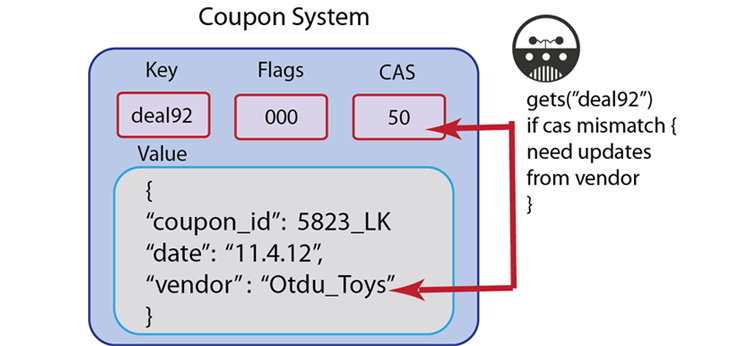

Retrieving items with CAS values
These methods return a value and the associated CAS value for a given key. The CAS value can be used later to perform a compare and swap operation. Getting the CAS value for a given document while you are getting the document may be useful if you want to update it, but want to do so while avoiding conflict with another document change.
The most common scenario where you will use a get-with-cas operation is when you want to retrieve a value and update that value using a cas operation. The cas operation requires a key and the CAS value of the key, so you would retrieve the CAS value using a get-with-cas operation.
Another scenario where get-with-cas is useful is when you want to test and see if another process has updated a key, and then perform some check or special operation if another process has updated the key. In this case, when you perform a get-with-cas and it returns an unexpected CAS value, you can have your application logic proceed along another path, than you would if get-with-cas succeeds.
For instance, imagine you are creating a coupon redemption system, but you only want the coupon to be valid for the first 50 users. In this case, you can store a counter for the coupon and use get-with-cas to see if the CAS value has changed; if it has, you know that the number of available coupons has changed and you might want to offer a different coupon, you may need to check another system to get new deals from that vendor, or check the actual coupon count before you display the coupon. In this case we illustrate the principle that you use a get-with-cas method to find out if the CAS value has changed, and then you know you need to check another system:
All documents and values stored in Couchbase Server will create a CAS value associated with it as metadata. Couchbase Server provides CAS values as integers; developer and server administrators do not provide these values. There are variations in the method naming and method signature; consult you respective SDK Language Reference to determine the correct method call.
When you want to perform a compare and swap, you will need to do a get-with-cas beforehand to get the current CAS value. You retrieve the CAS value for a given key, and then you can provide it as a parameter to the compare and swap operation.
In the case of some SDKs, such as Ruby, getting a document with a CAS value is an extension of the standard get call. In the example that follows, for instance, we perform a get, and provide an optional parameter to the call in order to retrieve the CAS value:
val = c.get("foo", :extended => true)
val.inspect #returns "foo"=>["1", 0, 8835713818674332672]
In this example, the value for the “foo” key is 1, flags are set to zero, and the CAS value is 8835713818674332672.
The equivalent call in the memcached protocol is get which returns the value for the key as well as the CAS value.
If a key does not exist, you will get a ‘key does not exist’ error in response. If you did not expect this result, you should check any application logic that creates that type of key, or any logic that deletes it may inadvertently cause this result. Another reason why you might get this result is that the item expired; in this case Couchbase Server returns a ‘key not found’ type error. So you will want to check any explicit expiration set for that key.
The types of errors that can occur during this operation include 1) inability to connect to a node, or 2) some error exists while attempting to format a value being retrieved. If you have a connection-level error you may need to reattempt connection, and possibly check the status of the server. If you have an error with the size of your value or formatting, you need to check the value itself, and how it is encoded and see if there are any issues that make the document incompatible with Couchbase Server.
For more information about connections and connection-level settings, see Optimizing client instances Client-side timeouts.